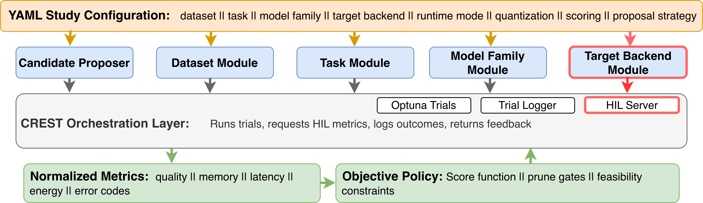
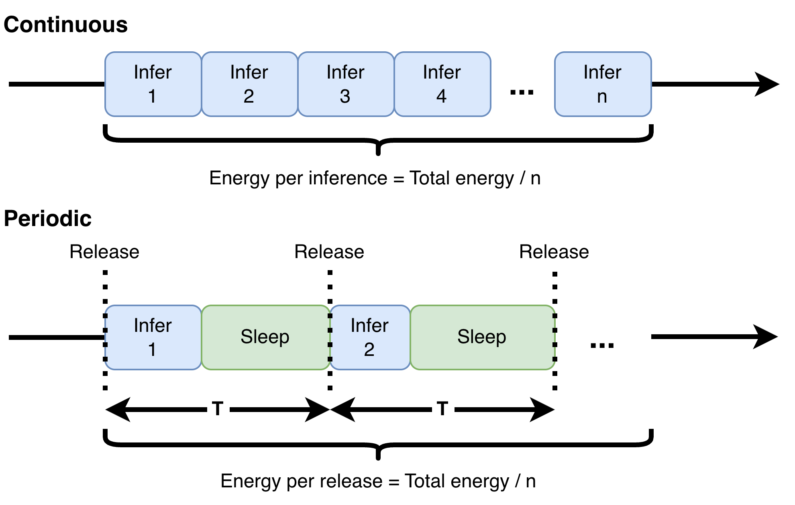
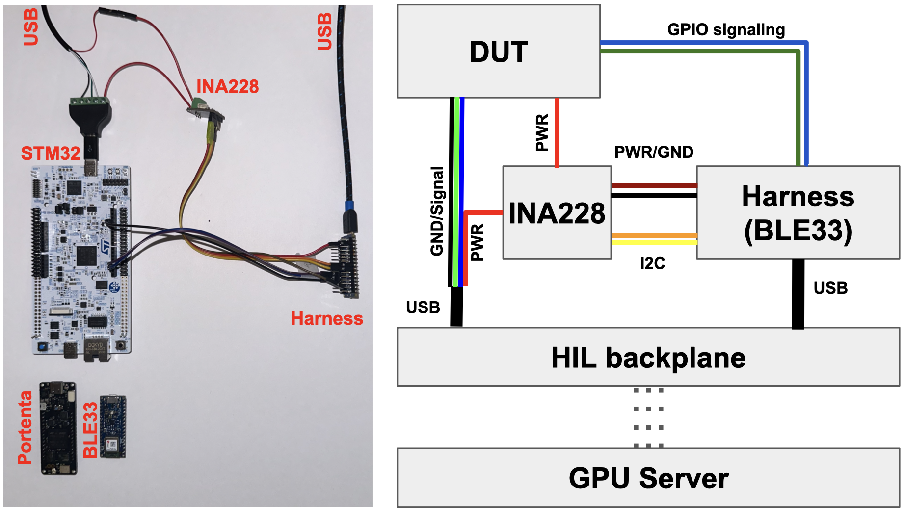
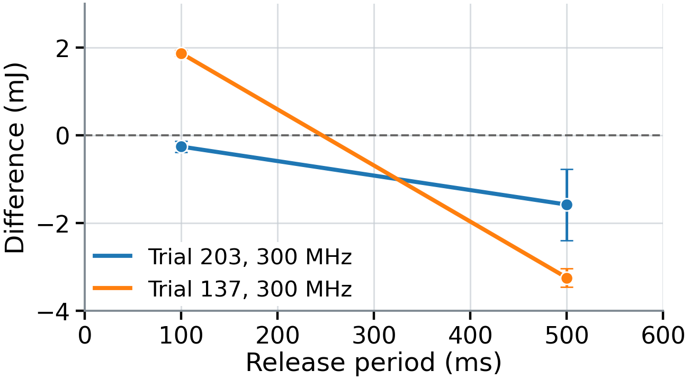
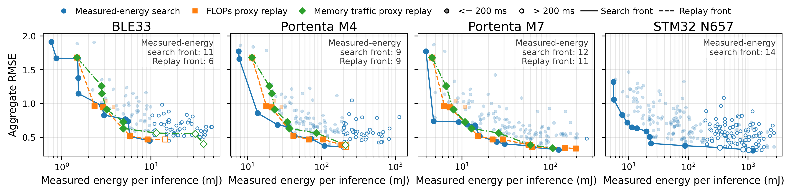
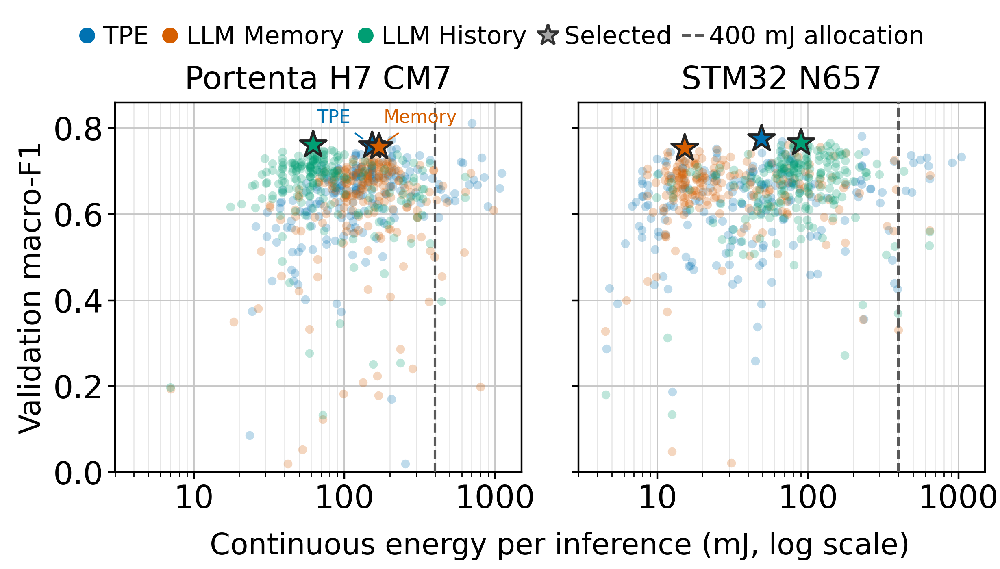

Configure a study
Select proxy or measured objectives, float32 or int8 quantization, and scalar or Pareto policies. Backend-supported options such as CPU clock can be part of the candidate configuration.
CREST is an open-source system for evaluating model and hardware configurations under their intended runtime schedule. Researchers can vary the workload, target, objective and candidate proposer while reusing evaluation, logging and replay.
Selecting an energy-efficient model for periodic sensing requires accounting for time between inferences. Hardware-aware model search typically measures inference alone, even when the application cares about energy per release. We present CREST (Cross-platform Runtime Evaluation and Search Tool), an open-source hardware-in-the-loop experimentation system that evaluates model and hardware configurations under a specified release schedule. Researchers can vary the objective, schedule, target and candidate proposer while reusing evaluation and replay. Records preserve comparison conditions and separate valid measurements from deployable candidates. Three case studies demonstrate the system. First, searches and controlled replay on STM32 N657 show how waiting changes model and clock selection. For one architecture, continuous inference favors 800 MHz over 300 MHz at 8.0 versus 17.1 mJ per inference, but additional waiting offsets 97% of this saving in a fitted decomposition. With STOP between releases, 300 MHz uses about 0.3-0.4% less board energy per release at 100 and 500 ms. At a fixed clock, the preferred architecture changes between release periods, which a model with shared waiting parameters cannot produce. Latency predicts continuous energy within a median 1.7% on held-out observations, yet most release-energy error remains in scheduled terms. In paired replay, one of six randomly selected near-latency pairs reverses its continuous-energy order by 5.8 mJ per release. Second, replay on three Arduino targets shows proxy-selected inertial-odometry candidates can fail to fit or use more energy than measured selections, with only 9 of 16 FLOPs-selected candidates fitting the most memory-constrained board. Third, an audio classification study reuses the evaluator with LLM-based candidate proposers, and cross-target replay moves a selected configuration from third to last in energy rank.
Vary deployment choices while reusing evaluation, measurement records and replay.
Select proxy or measured objectives, float32 or int8 quantization, and scalar or Pareto policies. Backend-supported options such as CPU clock can be part of the candidate configuration.
Continuous execution reports energy per inference. Periodic execution reports energy per release, including inference and the following sleep or waiting interval.
Target backends compile, program and evaluate candidates. Measurement validity is recorded separately from memory, latency and deadline feasibility.
Reevaluate candidates on another target or schedule without repeating the search or training. Records keep source quality separate from destination hardware measurements.
Optuna-native samplers and LLM proposal policies use the same evaluator. Proposed configurations receive the same deployment checks, scoring and measurement records.
Dataset, task, model-family and target-backend interfaces allow researchers to add workloads and deployment paths while retaining the surrounding evaluation and logging code.
Candidate proposal, workload evaluation and target measurement use replaceable interfaces.
A study configuration selects the workload, model family, target backend, schedule, quantization, scoring policy and candidate proposer. TPE, NSGA-II or an LLM proposer supplies candidates to Optuna-managed trials. Workload modules prepare data and build models. Target backends compile, program and measure candidates. The policy converts returned metrics into objectives and feasibility decisions.

Each measurement record identifies the interval, validity, deployment feasibility and provenance of its values. A valid energy measurement can remain available even when a candidate misses its deadline. Replay evaluates selected configurations without repeating the search or training, keeping source quality separate from destination hardware measurements.
The runtime schedule defines the energy objective.
An application requests a prediction every specified period. A candidate must finish inference within that period, and the board can sleep or wait for the remaining time.
Continuous inference repeats without an intentional waiting interval and reports energy per inference. Periodic inference releases one prediction per period and reports energy per release, including inference and the following sleep or waiting interval.
A faster candidate leaves more time for waiting. Its inference-energy saving must offset that additional waiting cost to retain its advantage per release. CREST measures both modes so researchers can check whether a choice remains preferable under the intended schedule.

A separate harness MCU reads an INA228 monitor while observing DUT GPIO markers. The markers delimit the measurement window, and accumulated energy is normalized per invocation or release. Coordinated measurements are accepted only when DUT timing, harness completion and run counts agree.
Measurements cover inference and waiting at the development-board USB supply. They include components powered through that input and exclude sensor acquisition, feature extraction and communication. Substantial power remains during sleep, so energy rankings depend on the deployment’s power boundary.

Two sensing workloads across three Arm Cortex-M development boards.
Case study 1
Six searches on STM32 N657 compare continuous-energy and periodic-energy selection at 100, 200 and 500 ms. Controlled replay shows that waiting can change the preferred clock and architecture.
For one architecture, continuous execution favors 800 MHz over 300 MHz at 8.01 versus 17.06 mJ per inference. Additional waiting offsets 97% of this saving in a fitted decomposition. With STOP between releases, 300 MHz uses about 0.3–0.4% less energy per release. At 300 MHz, two architectures also reverse their energy ordering between 100 and 500 ms.
Latency predicts continuous energy well, but most release-energy error remains in scheduled terms. Calibrated estimates can guide selection, while scheduled replay checks differences they miss.

Case study 2
CREST compares FLOPs, memory-traffic and measured-energy objectives for OxIOD inertial odometry using the same TCN architecture and float or int8 search space. Proxy-selected candidates are replayed on Nano 33 BLE Sense and the Portenta H7 M4 and M7 cores.
Only nine of 16 FLOPs-selected candidates deploy on BLE33. Among valid replay-front points, the median nearest-RMSE energy gap across the three targets is 14.8% for FLOPs and 38.4% for memory traffic. Some proxy-replay points also dominate measured-search points, so target measurements establish which tradeoffs are available.
Take candidates selected under different objectives through common deployment checks and measurements, preserving their source validation quality.

Case study 3
UrbanSound8K audio classification replaces OxIOD and TCNs with prepared log-mel features and a DS-CNN family. TPE and two LLM proposal policies use the same application score and deployment checks. Each of six searches reaches 200 feasible trials.
On Portenta, History selects validation macro-F1 of 0.761 at 61.7 mJ per inference, compared with TPE’s 0.760 at 152.5 mJ. Replaying all six selections changes their energy ordering. The Portenta TPE selection ranks third by energy on Portenta and last on STM32. These results demonstrate evaluator reuse and target-dependent choices, rather than general proposer superiority.
Change the workload and proposer while retaining the evaluator, then replay the selected configurations to check whether their energy ordering transfers to another target.

Selecting a configuration for periodic inference requires accounting for the energy consumed after inference finishes. CREST provides reusable evaluation and replay across workloads, targets and candidate proposers. The studies show that schedules can change model and clock choices, while target replay checks whether selected configurations fit and retain their energy advantage.